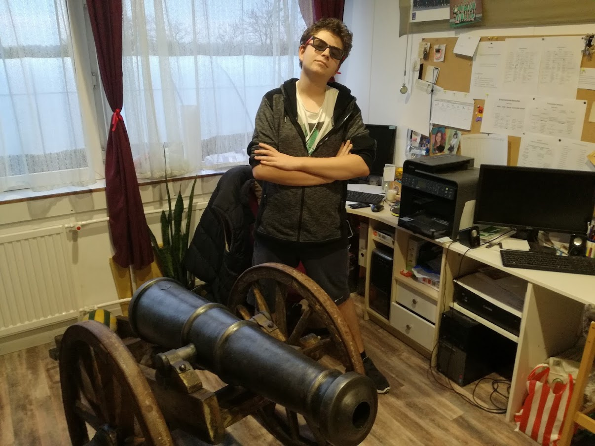
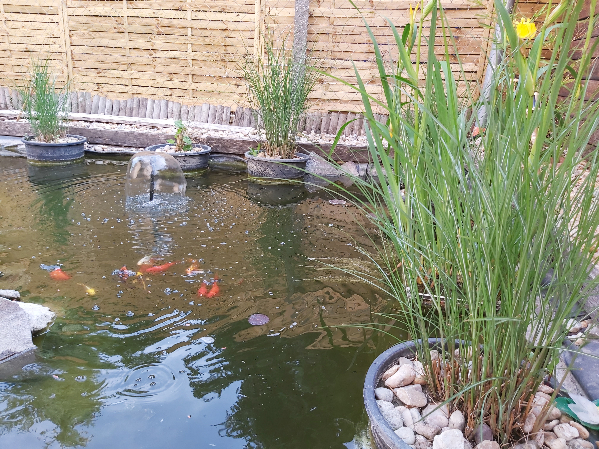
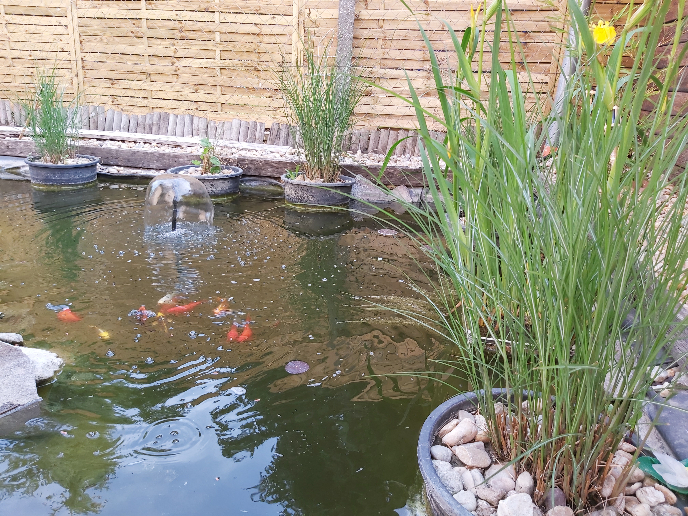

Néhány érdekesség rólam:

mint ahogy már említettem Média szakon tanultam, de mégis hogy a francba kerül egy média szakos gimnazista a BME gépészmérnöki szakára?
úgy hogy igazából nem tudtam eldönteni mégis mi legyek, mivel a médiának a sötét oldalát már megtapasztaltam, és így nem akartam azzal foglalkozni,
Anyám 3 héttel a beadási határidő előtt megkérdezte, hogy jó nekem-e a gépészmérnöki- erre én meg csak annyit válaszoltam miért ne?
nagyon szeretek állatokat tartani, volt már teknősöm, nyulam, libám, kacsám,mókusom, kutyám.
Van 3 akváriumom is, mindegyik különböző haltípusokra van tervezve,valamint egy tavunk is (kattints)
(Kerti tavunkról egy kép)
- mint ahogy már említettem Média szakon tanultam, de mégis hogy a francba kerül egy média szakos gimnazista a BME gépészmérnöki szakára?
úgy hogy igazából nem tudtam eldönteni mégis mi legyek, mivel a médiának a sötét oldalát már megtapasztaltam, és így nem akartam azzal foglalkozni,
Anyám 3 héttel a beadási határidő előtt megkérdezte, hogy jó nekem-e a gépészmérnöki- erre én meg csak annyit válaszoltam miért ne?
- nagyon szeretek állatokat tartani, volt már teknősöm, nyulam, libám, kacsám,mókusom, kutyám.
Van 3 akváriumom is, mindegyik különböző haltípusokra van tervezve,valamint egy tavunk is (kattints)

(Kerti tavunkról egy kép)